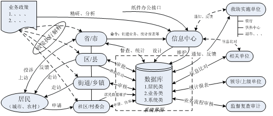

概述
救助受理审批是社会救助系统的核心业务，处理居民申请受理、走访调查以及审批，各级民政部门与相关业务的关系如下图所示

本救助受理审批系统有以下特点：
(1)、流程定义采用自定义方式进行设置，审批流程弹性设置审批级别(三级、二级等)。
例如：三级审批为社区申请-〉街道审核-〉区县审批；二级审批为街道审核-〉区县审批，甚至根据实际情况还可以跨级别审批、四级、五级审批等。
(2)、审批权限弹性设置(各个地区各机构岗位、部门、人员进行同级别审批)。
例如：社区可以分1、低保接待员审批2、低保受理员审批3、低保主任审批。
(3)、审批操作控制设置。
根据业务需要各个评议地区可设置：单户家庭审批、批量审批、机构批量审批。